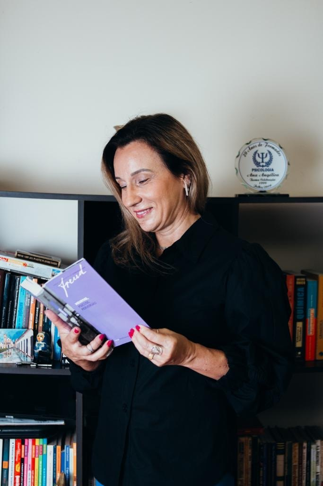

Psicóloga, psicanalista e gerontóloga. Atendimento de jovens, adultos e idosos, presencial em Icaraí, Niterói, e on-line.

Ajudo pessoas a encontrarem uma forma saudável de lidar com seus conflitos.
Sou psicóloga, psicanalista e gerontóloga, e atendo jovens, adultos e idosos. Meu trabalho parte de uma escuta atenta e acolhedora, num espaço seguro para você falar sobre o que sente, no seu tempo.
Além dos atendimentos individuais, tenho um olhar especial para a terceira idade, com grupos e rodas de conversa sobre o envelhecimento.
Cada fase traz seus próprios desafios. O atendimento acompanha você em cada uma delas.
Um espaço para entender emoções, escolhas e relações num momento de muitas mudanças.
Apoio para lidar com conflitos, ansiedade e as demandas do dia a dia de forma mais saudável.
Escuta e acolhimento com o olhar da gerontologia, para um envelhecimento com mais qualidade.
Alguns dos temas que a Ana aborda no consultório e nas redes.
Compreender o que a ansiedade diz sobre você e encontrar formas de lidar com ela.
Acolhimento e acompanhamento para atravessar momentos de tristeza e desânimo.
Entender o que está por trás do adiamento e retomar seus projetos.
Grupos e atendimentos voltados ao envelhecimento ativo e acolhido.
Consultório na Rua Mario Alves, 78, de segunda a sexta, das 9h às 17h.
Atendimento presencial também no Centro de Rio Bonito, na Rua Oswaldo Cruz, 146.
Sessões por videochamada, para você ser atendido de onde estiver, com o mesmo cuidado.
Mande uma mensagem pelo WhatsApp (21) 99892-5502.
Combine o horário e se prefere o atendimento presencial ou on-line.
Um espaço de escuta e acolhimento, no seu tempo.
Uma excelente profissional!!! Desde da primeira sessão, encontrei acolhimento, escuta qualificada. Muito competente no trabalho clínico.
★★★★★Melissa Toledo PereiraSenti-me muito bem acolhida, desde o primeiro encontro. Profissional sensível, mas experiente. Tem passado muita segurança.
★★★★★Maria Cecília de Albernaz CrespoAna Angélica é uma profissional incrível! Sua empatia, compreensão e habilidade de ouvir são verdadeiros presentes. Me senti acolhida e apoiada em cada sessão. Super recomendo!
★★★★★Fernanda MouraProfissional excelente (...) tem me ajudado muito no dia a dia. Me sinto mil vezes melhor após iniciar minhas terapias.
★★★★★Carlos Eduardo NascimentoA minha experiência com a psicóloga Ana Angélica foi maravilhosa. O seu carinho, gentileza e paciência ao me ouvir foi muito bom.
★★★★★Ozimar SantanaÓtima Psicóloga!! Humana, compreensiva e muito necessária. Recomendo de olhos fechados.
★★★★★Sandra Chelque